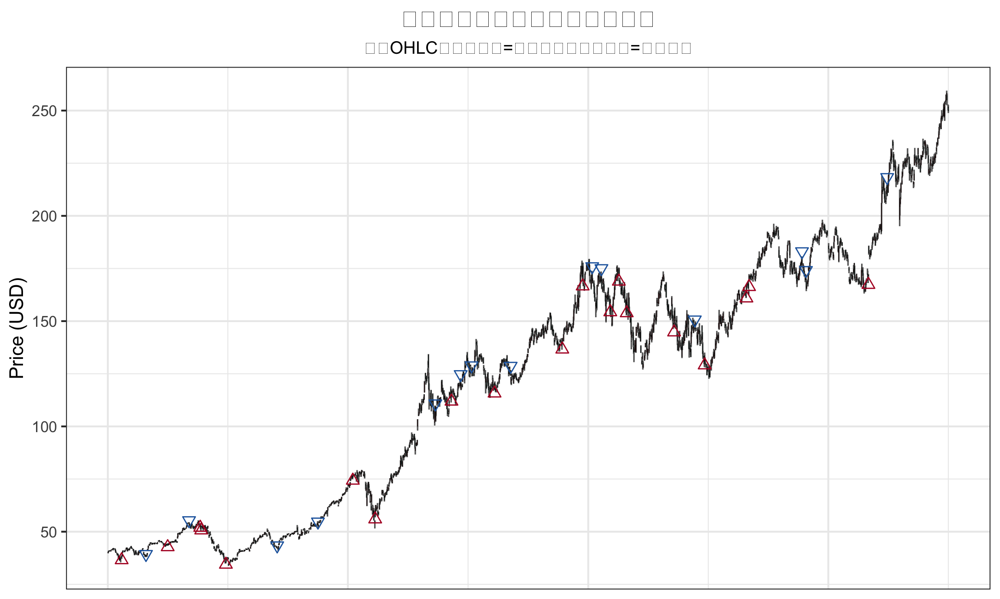
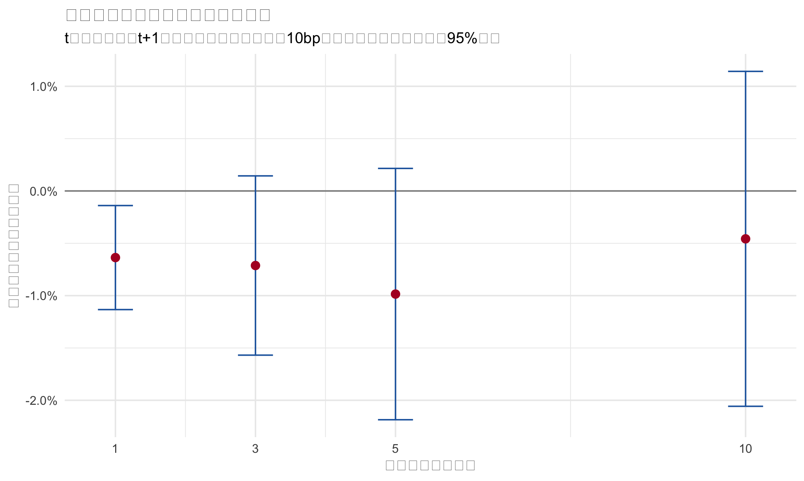

三根及多根K线：序列与确认
问题现场
多根形态看似提供了“确认”，却也更容易偷看未来。若在第一根K线日期上标记一个需要第三根才能完成的启明星，回测就提前两天知道答案。图上只是一枚箭头，时间泄漏却足以改变整个策略。本章把星线、三兵三鸦、三法等结构写成有完成时点的有限序列。
学习目标
- 表达三根及多根形态的逐日约束；
- 把信号时间放在形态完成日；
- 调用星线、三兵三鸦与三法的R/Python接口；
- 评价稀疏事件、重叠窗口与确认成本；
- 用前缀重算测试发现未来函数。
经典形态与市场机制
启明星与黄昏星通常包含长实体、停顿小实体和反向推进；三个白兵与三只乌鸦强调连续同向收盘；三法则在强方向K线后出现区间内整理并重新突破。经典解释把它们描述为控制权转移或趋势恢复，但每一项“长”“小”“位于内部”都必须参数化。
确认不是免费信息。等待最后一根减少假信号的同时，也可能错过大部分价格移动。研究必须把形态起点、完成日、可交易日与持有期分开，而不是把第一根当作信号时点。
章内方向索引
| 序列结构 | 看涨候选 | 看跌候选 | 研究语义 |
|---|---|---|---|
| 推进—停顿—反向推进 | 启明星 | 黄昏星 | 三根完成后才可知 |
| 连续同向实体 | 三个白兵 | 三只乌鸦 | 趋势推进，也可能已接近衰竭 |
| 推进—区间内整理—再突破 | 上升三法 | 下降三法 | 持续候选，通常需要五根 |
| 多个小实体与十字 | 十字启明星等 | 十字黄昏星等 | 更稀疏，需报告样本不确定性 |
可计算定义
对长度为 \(k\) 的形态，信号写为：
\[ s_t=g(X_{t-k+1},\ldots,X_t), \]
其最早可得时间是 \(t\) 日收盘后。前缀不变性要求：在任意未来终点重算时，历史日期 \(t\) 的信号不得变化。启明星要求长阴、小实体、长阳且第三根收盘进入第一实体；三法要求中间整理大体位于第一根范围内，最后一根沿原方向突破。规则越多，样本越少。
研究设计
主实验合并星线与三法：星线作为反转候选，三法作为持续候选，二者除组合表外必须分列保存。信号只放在最后一根日期，次日开盘执行，持有1、3、5、10日并扣10bp。稳健性检查前缀重算、形态分拆、穿透参数和非重叠事件。零事件是合法结果，不通过放宽阈值强行制造样本。
R实现
ohlc <- lab_xts()
stars_r <- eCandleSticks::add_csp_star(ohlc, n = 20)
methods_r <- eCandleSticks::add_csp_three_methods(ohlc)
crows_r <- eCandleSticks::add_csp_three_black_crows(ohlc, strict = TRUE)
multi_signal <- sign(
as.integer(stars_r[, "MorningStar"]) -
as.integer(stars_r[, "EveningStar"]) +
as.integer(methods_r[, "RisingThreeMethods"]) -
as.integer(methods_r[, "FallingThreeMethods"])
)严格三兵三鸦可能极为稀少，因此先保留原始事件列，不让它们凭名称进入主组合。所有多根信号都必须标在完成日。
Python实现
from ecandlesticks import add_star, add_three_black_crows, add_three_methods
from python.candlestick_lab import load_data, to_ohlcv
ohlcv = to_ohlcv(load_data())
stars = add_star(ohlcv, penetration=0.3)
methods = add_three_methods(ohlcv)
crows = add_three_black_crows(ohlcv)
multi_signal = (
stars["MorningStar"].astype(int)
- stars["EveningStar"].astype(int)
+ methods["RisingThreeMethods"].astype(int)
- methods["FallingThreeMethods"].astype(int)
).clip(-1, 1)Python的penetration参数必须进入研究记录；遗漏参数等于让默认值决定研究版本。
图形诊断

图形诊断重点核对完成时点、相邻交易行和共享K线。若在第一根日期上画出完整形态，应立即视为潜在未来函数，而不是漂亮的提前预警。
证据与稳健性
| sample | events | mean_gross | mean_net | win_rate | ci_low | ci_high |
|---|---|---|---|---|---|---|
| 全部事件 | 56 | -0.0089 | -0.0099 | 0.3929 | -0.0219 | 0.0022 |
| 非重叠事件 | 54 | -0.0096 | -0.0106 | 0.3889 | -0.0230 | 0.0017 |

多根形态通常较稀疏，均值很大也可能伴随覆盖零的宽区间。第一项稳健性是逐日截断数据重新检测；第二项把反转星线与持续三法分开；第三项完整报告穿透参数网格；第四项使用非重叠事件。多重尝试仍需预注册、留出集或校正 [@sullivan1999]。
AI协作实验室
让AI把多根形态生成状态机和前缀测试。约束是信号只能标在完成日，每个条件引用的最大时间偏移不得为正。验收包括逐日截断、人工核对一个启明星和一个三法样本，以及检查复合信号值域。
失效条件与常见误区
- 把完成信号回填到第一根，造成时间穿越；
- 混合反转与持续结构却不保留原始列；
- 稀疏样本只报告大均值，不报告区间；
- 忽略默认穿透参数和长短实体窗口；
- 为增加样本而事后放宽形态条件。
本章小结与练习
序列形态的首要约束是完成时点。确认增加信息也增加延迟；条件越多，越要正视样本稀疏和定义自由度。
- 复现星线、三法及其完成日。
- 改变穿透参数并完整保存敏感性表。
- 构造一个错误回填信号，展示其回测为何过于乐观。
进入下一章前，请确认你能证明任意历史信号在加入未来数据后不会改变，并区分确认信息与确认成本。